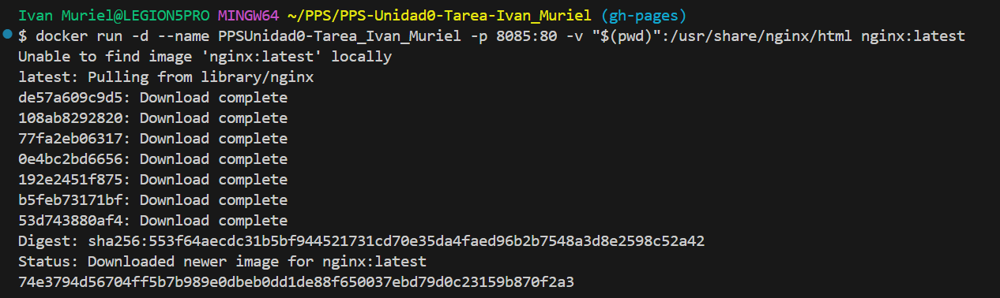
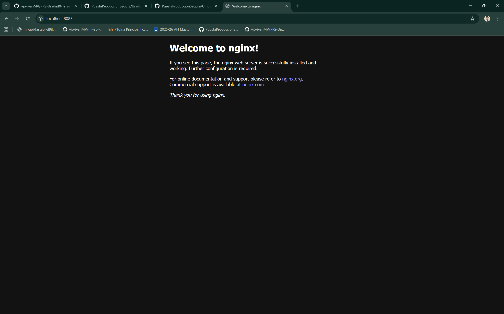

Despliegue de Documentación con NGINX y Docker
1. Explicación del proceso
Para completar la actividad, el objetivo fue levantar un servicio web que sirviera los ficheros estáticos generados por mkdocs alojados en la rama gh-pages del repositorio.
El proceso realizado fue el siguiente:
- Me aseguré de estar situado en la rama
gh-pagesdel repositorio para tener acceso a los archivos HTML generados (git checkout gh-pages). - Utilicé el CLI de Docker para crear un contenedor basado en la imagen oficial de NGINX.
- Configuré el contenedor con los siguientes parámetros mediante flags:
--name: Nombré al contenedorPPSUnidad0-Tarea_Ivan_Murielpara su fácil identificación.-d: Ejecuté el proceso en segundo plano (modo detached).-p 8085:80: Realicé un redireccionamiento de puertos, mapeando el puerto 8085 de mi máquina anfitriona al puerto 80 del contenedor (puerto por defecto de NGINX).-v "$(pwd)":/usr/share/nginx/html: Creé un volumen de tipo bind mount. Esto vincula mi directorio actual de trabajo (donde está la documentación) con la carpeta raíz del servidor web dentro del contenedor. Esto permite que NGINX sirva mis archivos locales directamente.
El comando final ejecutado fue:
docker run -d --name PPSUnidad0-Tarea_Ivan_Muriel -p 8085:80 -v "/$(pwd):/usr/share/nginx/html" nginx:latest
2. Evidencias del despliegue
A continuación, se adjuntan las capturas de pantalla que demuestran el correcto funcionamiento del servicio.
A. Creación de la máquina
En esta captura se muestra la ejecución del comando en la terminal y el ID del contenedor generado.

B. Visualización de la página web
Accediendo a través del navegador a http://localhost:8085, se observa la documentación cargada correctamente.

C. Información del Contenedor (Docker Inspect)
Detalle de la configuración interna del contenedor, donde se puede verificar el montaje del volumen (Mounts) y la configuración de red.